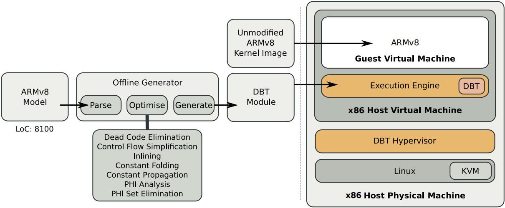
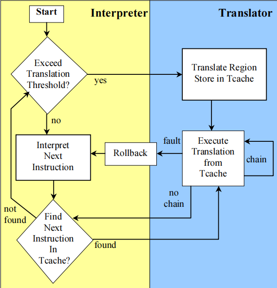
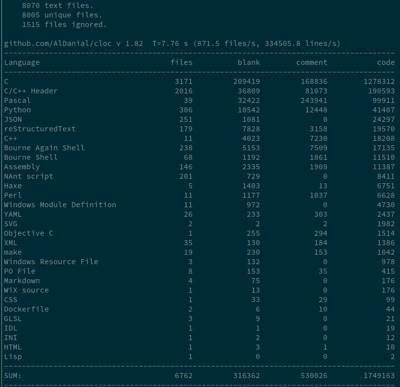
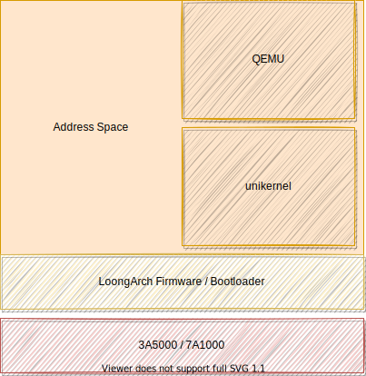

裸金属二进制翻译器的设计与实现
- 胡学仕
- 2021/12/30
裸金属二进制翻译器的设计与实现
- 动机: 为什么要做系统态二进制翻译
- 背景: QEMU 如何实现系统态二进制翻译及其问题
- 想法
- 使用系统态模拟系统态
- 压缩软件栈
- 设计
- 进度
目的
- 消灭指令集的差异
目的
- 消灭指令集的差异
- LoongArch 架构高效运行其他架构的操作系统
目的
- 消灭指令集的差异
- LoongArch 架构高效运行其他架构的操作系统
- 加速 LoongArch 上 x86 客户机操作系统运行
背景
Linux + QEMU 实现系统态翻译
qeme code flow [ref]
想法 : 使用系统态模拟系统态
HAMT : 利用 Dune 构建裸金属环境
利用 dune 可以将 QEMU 放到 guest 态, 从而 QEMU 可以直接访问 TLB 来加速访存
想法 : 使用系统态模拟系统态
Captive : 利用 unikernel 构建裸金属环境
 captive 将二进制翻译器放到 guest 态从而其可以获取直接访问系统资源的能力。
[A Retargetable System-Level
DBT Hypervisor]
这启发我们, 其实可以将二进制翻译器直接放到裸金属上。
想法 : 使用系统态模拟系统态
Transmeta
Transmeta 公司推出的 Crusoe VLIW 芯片，其利用 Code Morphing Software (CMS) 将 X86 指令翻译为 VLIW 指令，并使用硬件加速 Speculation , Precise exceptions 和 MMIO 访问等。 [The Transmeta Code Morphing Software: Using Speculation, Recovery, and Adaptive Retranslation to Address Real-Life Challenges]
想法 : 压缩软件栈

Linux Kernel Maps [ref]
Linux 内核很强大，但是对于系统态二进制翻译器而言，大多数功能不需要，其他的进程对于 QEMU 而言是只是干扰
想法 : 压缩软件栈
QEMU 可以运行在各种操作系统上，支持 kvm tcg hvf xen 等 cpu 虚拟化方案，支持多种设备的模拟。但是我们只需要一个在 LoongArch 上运行的二进制翻译器。
想法: 压缩软件栈
unikernel: 只为一个进程服务的 guest os
想法: 压缩软件栈
构建一个针对于 QEMU 的 unikernel - 构建一个 unikernel，其中只是运行 QEMU
- QEMU 运行在 kernel 态, 从而可以直接使用访问 TLB 来加速访存
设计
- 设备模拟占据 QEMU 大部分代码, 因为可以直接访问系统资源，这些代码几乎都可以去掉
- 简化之后的 QEMU 无需复杂的系统调用, 所以可以移除掉 Linux Kernel
- 因为运行在裸金属上，HAMT 的优化可以轻松的迁移过来
- Boot loader 加载翻译器，首先进行初始化，然后让 guest 直接接管硬件资源
设计
进度
- 背景调查
- 架构设计
- QEMU 的代码搬运
- 枚举出来依赖的外部库
- 枚举出来需要重构的接口
- 用户态测试 SeaBIOS 代码
- 用户态测试 Linux Kernel 代码
- 移除依赖的第三方库
- glib
- libc
- 构建裸机运行环境
- 裸机测试 32bit x86 Linux
- 裸机测试 xp
- 移植 HAMT
- 64bit 支持
- 多核支持